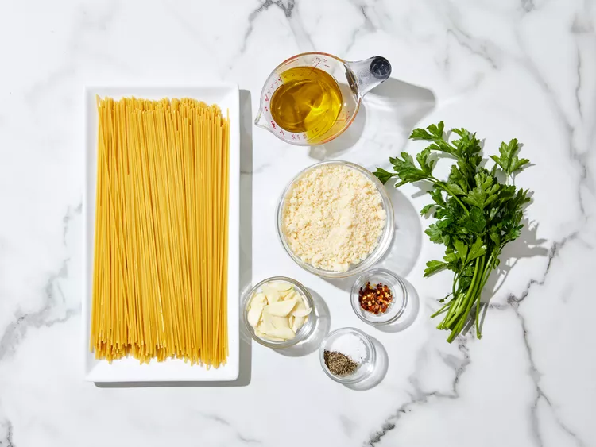
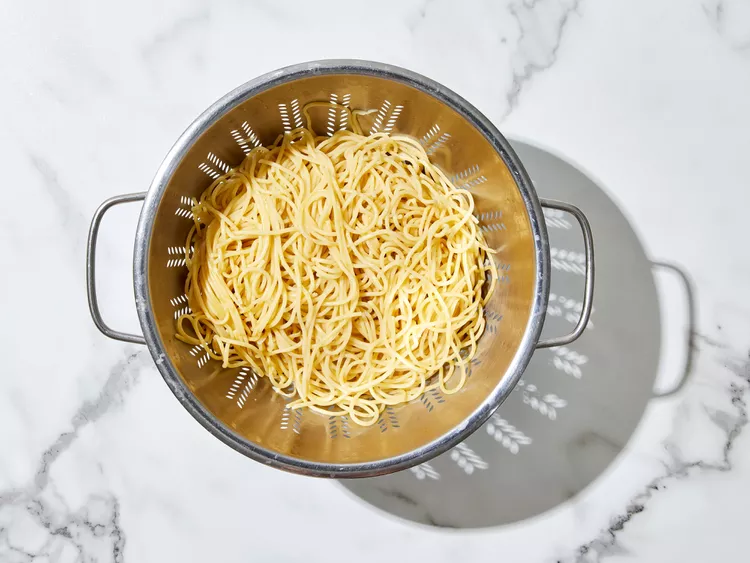
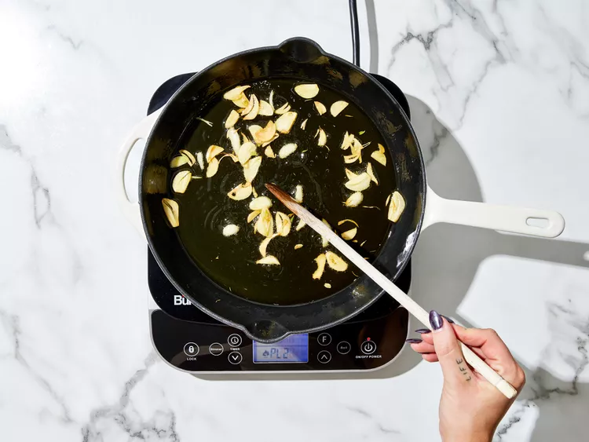
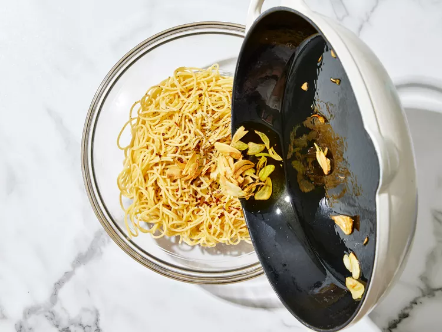
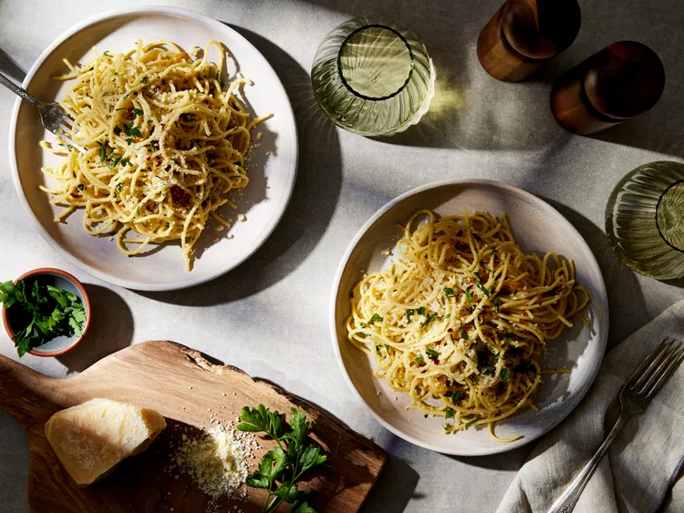

Aglio e Olio
Aglio e Olio is a classic Italian pasta dish from Naples, which translates to "garlic and oil" in English.
| Prep Time | Cook Time | Total Time | Servings |
|---|---|---|---|
| 10 mins | 15 mins | 25 mins | 4 |
Equipments
Ingredients
Instructions
-
1 Gather all ingredients.
 -
2 Bring a large pot of lightly salted water to a boil. Cook spaghetti in the boiling water, stirring occasionally until cooked through but firm to the bite, about 10 to 12 minutes. Drain and transfer to a pasta bowl.
 -
3 While the pasta is cooking, combine olive oil and garlic in a cold skillet.

-
4 Cook over medium heat to slowly toast garlic, about 10 minutes. Reduce heat to medium-low when olive oil begins to bubble. Cook and stir until garlic is golden brown, about another 5 minutes. Remove from heat.
 -
5 Stir red pepper flakes, salt, and black pepper into pasta.

-
6 Pour in hot olive oil and garlic, and sprinkle on Italian parsley and half of the Parmigiano-Reggiano cheese; toss until combined.
 -
7 Serve pasta topped with the remaining Parmigiano-Reggiano cheese.
